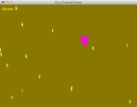

class Gosu::Image
def silhouette(window, color, tileable=false)
# Ensure that color is really a color - not a AARRGGBB integer
color = Gosu::Color.argb(color) if not color.is_a? Gosu::Color
# Convert image to binary string
binary_data = self.to_blob
# Run a regex on this binary string - the /n option makes it binary, and the
# /m option additionally ensures that line-breaks are ignored
# This regex replaces the 'rgb' bytes in each 'rgba' quad by the rgb values
# from the given color.
binary_data.gsub! /...(.)/nm,
"#{color.red.chr}#{color.green.chr}#{color.blue.chr}\\1"
# Create a small wrapper that has the same interface as RMagick::Image
binary_string_adapter = Struct.new(:columns, :rows, :to_blob)
adapter = binary_string_adapter.new(self.width, self.height, binary_data)
# Tada - there's the new image
Gosu::Image.new(window, adapter, tileable)
end
end

Powered by mwForum 2.29.7 © 1999-2015 Markus Wichitill